건축설비기사 (2007-05-13 기출문제)
1과목: 건축일반
1. 주택의 욕실계획에 대한 설명 중 옳지 않은 것은?
- 출입문은 거실 쪽으로 열리게 한다.
- 거실과 침실에서 멀지 않게 한다.
- 천장은 약간 경사지게 하는 것이 좋다.
- 현관이나 응접실과는 다소 격리시키는 것이 바람직하다.
(정답률: 77%)

2. 다음 중 리조트 호텔(Resor hotel)에 속하지 않는 것은?
- 클럽 하우스(club house)
- 터미널 호텔(terminal house)
- 해변 호텔(beach house)
- 산장 호텔(mountail house)
(정답률: 89%)
3. 커머셜 호텔(commercial hotel) 계획에서 크게 고려하지 않아도 되는 것은?
- 주차장
- 발코니
- 레스토랑
- 연회장
(정답률: 100%)
4. 다음 중 흡음재의 사용목적과 가장 관계가 먼 것은?
- 음의 명료도를 높이기 위하여
- 실내의 반향을 작게 하기 위하여
- 실내에 적당한 잔향시간을 갖게 하기 위하여
- 소음의 진동을 반사시키기 위하여
(정답률: 알수없음)
5. 수용인원 1,000명인 임대사무소 건축의 연면적으로 가장 적정한 것은?
- 1,500 m2
- 4,000 m2
- 10,00 m2
- 15,000 m2
(정답률: 알수없음)
6. 조적구조에 있어서 통줄눈을 피하는 가장 주된 이유는?
- 시공을 쉽게 하기 위해서
- 응력을 분산시키기 위해서
- 외관을 아름답게 하기 위해서
- 토막 벽돌을 이용하기 위해서
(정답률: 알수없음)
7. 다음의 철근콘크리트 구조에 관한 설명 중 옳지 않은 것은?
- 철근과 콘크리트의 응력분담은 각각의 단면적비에 의한다.
- 철근과 콘크리트의 선팽창계수는 거의 같다.
- 철근과 콘크리트의 응력전달은 철근 표면의 부착력에 의한다.
- 철근은 콘크리트의 피복에 의해 부식이 방지된다.
(정답률: 알수없음)
8. 다음의 지붕에 대한 설명 중 틀린 것은?
- 지분의 요구성능은 강우설량, 바람, 일사의 상황 등에 따라 다르나, 지붕의 구법은 어느 지역이나 같다.
- 비, 바람, 눈을 막는 것이 가장 중요한 기능이나 그 외에 단열, 차음에 관해서도 유효하지 않으면 안된다.
- 전통적인 구법에서는 우량이 아주 적은 지방을 지외하고 경사를 가진 지붕이 보통이다.
- 평지붕이 일반적으로 사용된 것은 금세기 초이고 이것은 신뢰할 수 있는 방수재료의 출현에 의해 가능하게 되었다.
(정답률: 알수없음)
9. 백화점의 기능을 고객권, 종업원권, 상품권, 판매권으로 분류할 때 평면계획상 서로의 관계가 가장 적은 것은?
- 상품권과 고객권
- 상품권과 판매권
- 고객권과 종업원권
- 종업원권과 판매권
(정답률: 알수없음)
10. 다음 중 중복도형 아파트에 대한 설명으로 옳지 않은 것은?
- 프라이버시가 좋지 않다.
- 부지의 이용률이 낮다.
- 통풍, 채광상 불리하다.
- 도심지 독신자 아파트에 이용된다.
(정답률: 알수없음)
11. 백화점 건축의 에스컬레이터에 관한 기술로서 알맞지 않은 것은?
- 엘리베이터보다 수송량이 크다.
- 엘리베이터보다 설비비가 낮고, 소요면적도 작다.
- 고객 시야가 좋고, 고객을 기다리게 하지 않는다.
- 설치시 층 높이에 대한 고려가 필요하다.
(정답률: 알수없음)
12. 목재 지붕틀을 구성하는 부재가 아닌 것은?
- 처마도리
- 깔도리
- ㅅ자보
- 토대
(정답률: 70%)
13. 기초의 계획 및 설치에 대한 유의사항으로 옳지 않은 것은?
- 지하실은 가급적 건물 전체에 균등히 설치하여 침하를 줄이는데 유의한다.
- 지반의 상태가 고르지 못하거나 편심 하중이 작용하는 건축물의 기초는 서로 다른 형태의 기초나 말뚝을 혼용하는 것이 좋다.
- 기초를 땅속 경사가 심한 굳은 지반에 올려놓을 경우 슬라이딩의 위험성을 고려해야 한다.
- 지중보를 충분히 설치하면 기초의 강성이 높아지므로 부동침하 방지에 도움이 된다.
(정답률: 60%)
14. 사무소건축의 엘리베이터 계획에 대한 설명 중 옳지 않은 것은?
- 주요 출입구와 홀에 직접 면해서 배치한다.
- 외래자에게 직접 알려질 수 없는 위치에 배치한다.
- 가능한 한 곳에 집중해서 배치하는 것이 좋다.
- 엘리베이터의 배열은 단거리 보행으로 모든 엘리베이터에 접근할 수 있도록 한다.
(정답률: 82%)
15. 다음 중 새집증후군(sick house syndrome)의 원인과 가장 관계가 먼 것은?
- 건물의 기밀성 증대로 인한 환기부족 현상
- 건자재/시공재에서 화학물질사용의 증가
- 생활용품으로 화학제품 사용의 증가
- 시공결함으로 인한 참기의 증가
(정답률: 62%)
16. 음의 성질에 관련된 용어에 대한설명 중 틀린 것은?
- 파동이 진행 중에 장애물이 있으면 직진하지 않고 그 뒤쪽으로 돌아가는 현상을 회절이라 한다.
- 진동수가 조금 다른 두 음이 간섭에 의해서 생기는 현상을 울림이라 한다.
- 발음체로부터 나오는 음파를 다른 물체가 흡수하여 같이 소리를 내는 현상을 간섭이라 한다.
- 실내에서 음을 갑자기 멈추면 그 음이 수 초간 남아 있는 현상을 잔향이라 한다.
(정답률: 알수없음)
17. 다음 중 허용지내력도가 가장 큰 지반은?
- 모래
- 점토
- 로움
- 자갈
(정답률: 55%)
18. 다음 중 결로발생의 원인과 가장 관계가 먼 것은?
- 실내외의 온도차
- 실내습기의 부족
- 구조체의 열적 특성
- 생활습관에 의한 환기부족
(정답률: 75%)
19. 다음 중 학교건물을 각종 변화에 대응할 수 있도록 융통성있게 해결하려는 방법과 가장 관계가 먼 것은?
- 칸막이의 이동 변경
- 특별 교실을 확대
- 융통성 있는 교실의 배치
- 공간의 다목적성
(정답률: 알수없음)
20. 다음 중 반자의 형상과 명칭의 연결이 옳지 않은 것은?
- 평자반 :

- 경사반자 :

- 치장반자 :

- 변형(이중)반자 :

(정답률: 92%)
2과목: 위생설비
21. 내경 40mm, 길이 20m인 급수관에 유속 2m/s로 물을 보내는 경우 마찰손실수두는? (단, 관마찰계수는 0.02이다.)
- 0.5m
- 1.0m
- 1.5m
- 2.0m
(정답률: 알수없음)
22. 다음 중 급탕설비에 있어서 순환펌프의 순환량의 결정방식으로 가장 적당한 것은?
- 사용수량과 같게 한다.
- 급탕량의 1/2로 한다.
- 급탕량의 15~22%로 한다.
- 배관 등에서는 방열손실량으로 산출한다.
(정답률: 70%)
23. 배수수직관 내의 압력변화를 방지 또는 완화하기 위해 배수수직관으로부터 분기ㆍ입상하여 통기수직관에 접속하는 도피통기관을 의미하는 것은?
- 신정통기관
- 습통기관
- 공용통기관
- 결합통기관
(정답률: 60%)
24. 다음 기구에서 배수구 공간을 두고 간접배수를 해야 할 경우는?
- 세면기
- 물탱크의 넘침관
- 청소용 실크
- 욕조
(정답률: 알수없음)
25. 수압 1 [kg/m2]은 수두 얼마에 해당하는가?
- 0.1 [mAq]
- 1 [mAq]
- 10 [mAq]
- 15 [mAq]
(정답률: 알수없음)
26. 다음 중 스프링클러보다 더 미세한 보다 균일한 분무상의 물로 연소면을 덮어 보통의 방수로서는 소화할 수 없는 가연물, 유류, 전기 화재에 유효한 설비는?
- 드렌처설비
- 옥외소화전설비
- 물분무소화설비
- 옥내소화전설비
(정답률: 알수없음)
27. BOD 제거율을 바르게 나타낸 관계식은?
- (유입수의 BOD/유출수의 BOD)×100
- (유출수의 BOD/유입수의 BOD)×100
- {(유출수의 BOD-유입수의 BOD)/유출수의 BOD}×100
- {(유입수의 BOD-유출수의 BOD)/유입수의 BOD}×100
(정답률: 알수없음)
28. 다음 중 압력탱크방식 급수법에 대한 설명으로 옳은 것은?
- 고가탱크방식에 비하여 관리비용이 저렴하고 저양정의 펌프를 사용한다.
- 부분적으로 높은 수압을 필요로 할 때 적당하다.
- 항상 일정한 수압을 유지할 수 있다.
- 취급이 비교적 쉽고 고장도 없다.
(정답률: 50%)
29. 간접가열식 급탕방식에 대한 설명 중 옳지 않은 것은?
- 탱크에 가열코일을 설치하여 이 코일을 통해 물을 간접적으로 가열하는 방식이다.
- 난방용보일러와 겸용할 수 있다.
- 저압보일러를 사용할 수 없으며 중압 또는 고압보일러를 사용한다.
- 보일러에서 만들어진 등기 또는 고온수를 열원으로 한다.
(정답률: 알수없음)
30. 다음 중 통기관의 목적과 가장 관계가 먼 것은?
- 배수계통내의 배수 및 공기의 흐름을 원활히 한다.
- 트랩의 봉수가 파괴되는 것을 방지 한다.
- 배수관 계통의 환기를 도모하여 관내를 청결하게 유지한다.
- 관내 칠요한 곳을 폐쇄하여 압력 변동을 갖도록 한다.
(정답률: 84%)
31. 펌프의 비속도 n을 나타내는 식으로 옳은 것은? (단, 회전수를 N, 최고 효율점의 토출량을 Q, 효율점의 전양정을 H를 나타낸다.)
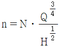
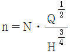
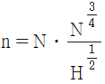
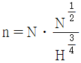
(정답률: 알수없음)
32. 대변기의 세정급수 방식 중 하이탱크식과 로우탱크식에 대한 설명으로 옳은 것은?
- 하이탱크식은 로우탱크식보다 세정소음이 작다.
- 하이탱크식과 로우탱크식은 탱크로의 급수 수압이 다소 낮아도 사용할 수 있다.
- 로우탱크식과 하이탱크식은 연속 사용이 가능하다.
- 로우탱크식은 하이탱크식보다 화장실내의 공간을 적게 차지하여 유리하다.
(정답률: 50%)
33. 옥내소화전 설비에서 송수구의 설치 높이 기준은?
- 지면으로부터 높이 0.5m 이하의 위치
- 지면으로부터 높이 0.5m 이상 1.0m 이하의 위치
- 지면으로부터 높이 1.0m 이상 1.5m 이하의 위치
- 지면으로부터 높이 1.5m 이상 2.0m 이하의 위치
(정답률: 90%)
34. 급탕설비의 순환배관에서 관마찰저항으로 인한 순환량의 불균등을 방지하기 위한 배관방식은?
- 상향배관방식
- 리버스리턴방식
- 하향배관방식
- 강제순환방식
(정답률: 64%)
35. 연면적 2000m2인 은행건물에 필요한 급수량은? (단, 유효면적당 인원은 0.2인/m2, 건물의 유효면적비율은 60%, 급수량은 120 L/c/d로 한다.)
- 24.4m3/d
- 26.6m3/d
- 28.8m3/d
- 30.0m3/d
(정답률: 알수없음)
36. 액화석유가스에 대한 설명 중 옳지 않은 것은?
- 연소할 때의 이론공기량이 많다.
- 주성분은 프로판, 부탄이다.
- 생가스에 의한 일산화탄소 중독의 위험성이 없다.
- 공기보다 가볍다.
(정답률: 알수없음)
37. 다음 중 급수용 탱크에서 발생하는 직접적인 물의 오염원인으로 볼 수 없는 것은?
- 정체수
- 탱크재질
- 햇빛의 침입
- 크로스 커넥션
(정답률: 50%)
38. 배수배관에 있어서 한계 유속은 일반적으로 얼마인가?
- 0.2 m/sec
- 2.8 m/sec
- 2.0 m/sec
- 1.5 m/sec
(정답률: 알수없음)
39. 다음 중 배관내 유체의 흐름을 일정한 방향으로만 흐르게하고 역류를 방지하는데 사용되는 밸브는?
- 글로브밸브
- 체크밸브
- 감압밸브
- 안전밸브
(정답률: 알수없음)
40. 펌프의 흡입양정이 10m 이고, 20m 높이에 있는 옥상탱크에 양수할 때, 전양정은 얼마인가? (단, 관로의 전손실수두는 1kg/cm2 이다.)
- 20m
- 30m
- 40m
- 50m
(정답률: 알수없음)
3과목: 공기조화설비
41. 습구온도선을 이용하여 엔탕피의 값을 읽도록 되어있는 공기선도는?
- λ-Re 선도
- t-x 선도
- t-p 선도
- p-i 선도
(정답률: 56%)
42. 유인 유니트방식에 대한 설명 중 옳지 않은 것은?
- 각 유니트마다 조절할 수 있으므로 각 실의 온도조절이 가능하다.
- 각 유니트마다 수배관을 해야 하므로 누수의 염려가 있다.
- 중앙공조기는 1차, 2차 공기를 처리해야 하므로 규모가 커야 한다.
- 고속덕트를 사용하므로 덕트스페이스를 작게 할 수 있다.
(정답률: 알수없음)
43. 유리창을 통한 취득열량을 계산하고자 할 경우 축열계수법을 이용할 수 있다. 다음의 축열계수법에 관한 설명 중 옳지 않은 것은?
- 축열계수는 건물 구조체의 중량과 관계가 있다.
- 방위가 동쪽일 경우 방위별 표준일사열량의 1일 최고치를 계산에 이용한다.
- 축열부하계수는 동일한 시각이어도 내측에 블라인드의 유무에 따라 다르다.
- 축열부하계수를 이용할 경우에는 차폐계수는 고려하지 않는다.
(정답률: 알수없음)
44. 회전수가 366rpm, 소요동력 2.0PS, 송풍기 전압 25mmAq인 송풍기를 655rpm으로 운전했을 때 소요동력(L2)과 송풍기 전압(P2)은 얼마인가?
- L2=3.6 PS, P2=80mmAq
- L2=6.4 PS, P2=44.7mmAq
- L2=11.5 PS, P2=80mmAq
- L2=11.5 PS, P2=143mmAq
(정답률: 73%)
45. 열매가 증기인 경우 표준방열량 산정시 적용하는 표준상태의 열매온도와 실내온도는?
- 열매온도 80℃, 실내온도 18.5℃
- 열매온도 80℃, 실내온도 21.5℃
- 열매온도 102℃, 실내온도 18.5℃
- 열매온도 102℃, 실내온도 21.5℃
(정답률: 73%)
46. 배관용 탄소강관의 배관 내에 120℃의 증기를 통과시키면 직관 60m의 배관 팽창량(cm)은? (단, 선팽창계수 C=11.9×10-6, 배관 주위온도 20℃)
- 7.1
- 8.6
- 17.2
- 35.5
(정답률: 59%)
47. 다음의 각종 공기조화방식에 관한 설명 중 옳은 것은?
- 덕트병용 패키지방식은 급기를 위한 덕트 샤프트가 반드시 필요하다.
- 유인 유니트방식은 부하변동에 따른 적응성은 나쁘나 외기냉방의 효과는 크다.
- 팬코일 유니트방식은 전공기방식의 일종으로 개별제어를 할 수 없다.
- 단일덕트방식은 2중덕트방식과 비교하여 시설비가 적게 들고 덕트 스페이스도 적게 차지한다.
(정답률: 알수없음)
48. 다음의 덕트와 관련된 설명 중 옳지 않은 것은?
- 방화댐퍼는 화재시에 덕트를 통해 방화구역으로 불이 번지지 않도록 덕트의 통로를 차단하는 역할을 한다.
- 점검구는 풍량조정이나 점검을 해야 하는 곳에 설치 한다.
- 같은 양의 공기가 덕트를 통해 송풍될 때 풍속을 높게 하면 덕트의 단면 치수도 크게 하여야 한다.
- 고속덕트는 가급적 원형 덕트로 한다.
(정답률: 알수없음)
49. 습공기의 상태변화량 중 수분의 변화량과 엔탈피변화량의 비율을 의미하는 것은?
- 열수분비
- 현열비
- 접촉계수
- 바이패스계수
(정답률: 알수없음)
50. 다음의 증기난방에 대한 설명 중 옳은 것은?
- 온수난방에 비하여 열용량이 커 예열시간이 길게 소요된다.
- 온수난방에 비하여 부하변동에 따른 방열량 조절이 곤란하다.
- 온수난방에 비하여 소요방열면적과 배관경이 크게 되므로 설비비가 높다.
- 온수난방에 비하여 한랭지에서 운전정지중에 동결의 위험이 크다.
(정답률: 59%)
51. 다음 중 천장 높이가 높거나 외기에 자주 개방되는 공간에 가장 적합한 난방방식은?
- 증기난방
- 복사난방
- 온수난발
- 온풍난방
(정답률: 알수없음)
52. 펌프의 NPSH(유효 흡입양정)에 관한 설명 중 옳지 않은 것은?
- 펌프설비에서 얻어지는 NPSH는 기압의 영향을 받는다.
- 펌프설비에서 얻어지는 NPSH는 흡입양정, 수온, 마찰, 손실 등에 의해 결정된다.
- 토오마의 캐비테이션계수는 비교회전수의 함수이다.
- 펌프설비에서 얻어지는 NPSH를 펌프가 필요로 하는 NPSH보다 작게 한다.
(정답률: 알수없음)
53. 다음 중 변풍량 방식에 대한 설명으로 옳지 않은 것은?
- 변풍량 유니트는 풍량제어 방식에 따라 바이패스형, 슬롯형, 유인형 등이 있다.
- 2중덕트 변풍량 방식은 정풍량 2중덕트보다는 에너지 절감의 효과가 있다.
- 단일덕트 변풍량 방식은 취출구 1개 또는 여러 개에 변풍량 유니트를 설치하여 실온에 따라 취출풍량을 제어한다.
- 단일덕트 변풍량 방식은 부하가 감소되더라도 실내공기의 오염은 없다.
(정답률: 알수없음)
54. 건구온도 20℃, 절대습도 0.015kg/kg‘인 습공기 6kg의 엔탈피는? (단, 공기 정압비열 0.24kcal/kgㆍ℃, 수증기 정압비열 0.24kcal/kgㆍ℃, 수증기 정압비열 0.44kcal/kgㆍ℃, 0℃애서 포화수의 증발잠열 597.5kcal/kg)
- 13.9 kcal
- 28.8 kcal
- 54.6 kcal
- 83.4 kcal
(정답률: 19%)
55. 공기 여과기의 종류 중 일명 전자식 공기청정기라고도 하며, 먼지의 제거효율이 높고, 미세한 먼지라든지 세균도 제거되므로 병원, 정밀기계공장 등에서 사용이 가능한 것은?
- 충돌점착식
- 활성탄 흡착식
- 건성여과식
- 전기식
(정답률: 54%)
56. 다음 중 주방, 공장, 실험실에서와 같이 오염물질의 확산 및 방산을 가능한 한 극소화시키려고 할 때 적용되는 환기 방식은?
- 희석환기
- 국소환기
- 전체환기
- 자연환기
(정답률: 77%)
57. 500명을 수용하는 극장에서 1인당 이산화탄소 배출량이 17 L/h일 때, 이상화탄소 농도가 0.⑤% 인 외기를 도입하여 실내의 이산화탄소 농도를 0.1%로 유지하는데 필요한 환기량은 얼마인가?
- 16000 m3/h
- 17000 m3/h
- 18000 m3/h
- 19000 m3/h
(정답률: 알수없음)
58. 다음의 배관 유속에 관한 설명 중 부적당한 것은?
- 관내에 흐르는 유속을 높이면 배관 내면의 부식이 심해진다.
- 관내에 흐르는 유속을 높이면 펌프의 소요동력이 증가한다.
- 냉각수의 배관 내 유속은 4m/s 정도로 하는 것이 가장 적당하다.
- 관내에 흐르는 유속이 너무 낮으면 배관 내에 혼입된 공기를 밀어내지 못하여 물의 흐름에 대한 저항이 커진다.
(정답률: 알수없음)
59. 다음과 같은 냉방부하의 구성요인 중 현열만을 취득하게 되는 것은?
- 유리를 통과하는 복사열
- 창 또는 문틈에서의 틈새바람에 의한 취득열
- 인체에서의 발생열
- 외기 도입에 의한 취득열
(정답률: 알수없음)
60. 내경 50mm인 원관속을 흐르는 물의 유량은 10.5m3/hr이다. 관의 길이 10m 일 경우 마찰손실은? (단, 관마찰계수는 0.02이다.)
- 0.25 mAq
- 0.45 mAq
- 0.62 mAq
- 0.82 mAq
(정답률: 알수없음)
4과목: 소방 및 전기설비
61. 에스컬레이터의 경사는 최대 얼마 이하로 하여야 하는가?
- 20˚
- 30˚
- 40˚
- 50
(정답률: 54%)
62. 길이 20[m], 폭 20[m], 천장높이 5[m], 조명율 50[%]의 사무실에서 전광속 2,500[lm]의 40[W] 형광등을 몇 개 사용하면 평균조도 120[lx]를 얻게 되는가? (단, 조명 유지율은 80[%]이다.)
- 43개
- 45개
- 48개
- 50개
(정답률: 알수없음)
63. 180[cd]의 백열전구에서 3[m] 거리에 있는, 빛이 나아가는 방향에 직각인 면과 60˚ 기울어진 평면상의 조도는?
- 10 [lx]
- 20 [lx]
- 30 [lx]
- 40 [lx]
(정답률: 64%)
64. 수용률 60[%], 부하의 입력 한계가 50[kW]인 비상용 부하에 대한 자가발전기 용량은 최소 얼마 이상으로 하는가?
- 30 [kVA]
- 49 [kVA]
- 64 [kVA]
- 83 [kVA]
(정답률: 70%)
65. DOC 제어방식에 대한 설명으로 옳지 않은 것은?
- 정밀한 제어를 할 수 있다.
- 신뢰성이 우수하다.
- 응용성이 풍부하다.
- 유지, 보수에 비용이 많이 든다.
(정답률: 46%)
66. 제1종 제어방식에 대한 설명으로 옳지 않은 것은?
- 5[Ω]
- 10[Ω]
- 5[Ω]
- 100[Ω]
(정답률: 알수없음)
67. 다음의 회로에 대한 계산식으로 옳지 않은 것은?
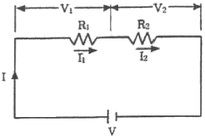
- V=V1+V2
- I=I1+I2
- R=R1+R2
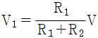
(정답률: 알수없음)
68. 교류회로의 역률을 나타내는 것으로 옳은 것은?
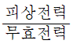
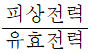
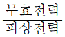
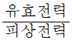
(정답률: 알수없음)
69. 다음 그림에서 합성 정전용량은?
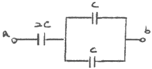
- C
- 2C
- 3C
- 4C
(정답률: 알수없음)
70. 자동제어 계장공사에서 실내형 온도 검출기의 설치위치로서 적합하지 않은 곳은?
- 태양 복사열의 영향을 받지 않는 곳
- 환기측 그릴이 있는 천장
- 바닥 위 1.5m 높이의 벽면
- 토출과 환기의 단락회로가 이루어지기 쉬운 장소
(정답률: 알수없음)
71. 다음 중 수변전 설비에 사용되는 계기용 변성기 종류가 아닌 것은?
- 계기용 변압기(PT)
- 계기용 변류기(CT)
- 영상 변류기(ZCT)
- 피뢰기(LA)
(정답률: 알수없음)
72. 다음 중 수용가의 최대수용전력 산출과 가장 관계가 먼 것은?
- 부등률
- 부하율
- 수용률
- 차단률
(정답률: 알수없음)
73. 자계의 방향이나 도체에 흐르는 전류 방향이 바뀌면 도체가 움직이는 방향도 바뀌게 되는데, 이러한 도체가 움직이는 방향을 알 수 있는 법칙은?
- 렌쯔의 법칙
- 플레밍의 오른손 법칙
- 플레밍의 왼손 법칙
- 앙페르의 법칙
(정답률: 알수없음)
74. 다음 중 논리식이 잘못된 것은?
- Aㆍ0 = 0
- Aㆍ1 = 1
- A + 1 = 1
- A + 0 = A
(정답률: 알수없음)
75. 피뢰시설에서 인하도선의 단면적은 피복이 없는 동선을 기준으로 최소 얼마 이상이어야 하는가?
- 16mm2
- 30mm2
- 3mm2
- 50mm2
(정답률: 알수없음)
76. 3상 Y결선에서 선간전압이 220[V]인 3상 교류의 상전압은?
- 127 [V]
- 220 [V]
- 381 [V]
- 440 [V]
(정답률: 알수없음)
77. 회로내의 임의의 한점에 들어오고 나가는 전류의 합은 같다와 관련된 법칙으로 전류의 법칙이라고도 불리우는 것은?
- 키르히포의 제1법칙
- 키르히포의 제2법칙
- 앙페르의 오른나사의 법칙
- 오옴의 법칙
(정답률: 80%)
78. 도선의 길이를 10배로 늘리고 단면적을 10배로 크게 했을 때의 전기 저항은 최초의 전기저항의 몇 배로 되는가?
- 변하지 않는다.
- 100배
- 10배
- 2배
(정답률: 37%)
79. 건축설비 자동제어 중 피드백 제어방식을 제어동작에 의해 분류하였을 때 연속동작에 해당되지 않는 것은?
- 다위치동작
- 비례동작
- 적분동작
- 미분동작
(정답률: 알수없음)
80. 다음 중 전기누전에 의한 감전을 방지하기 위하여 행하는 전기 공사는?
- 접지 공사
- 표시설비 공사
- 피뢰 공사
- 옥내 배선 공사
(정답률: 알수없음)
5과목: 건축설비관계법규
81. 빈자높이를 4m 이상으로 하지 아니할 수 있는 것은? (단, 기계환기장치를 설치하지 않은 경우)
- 문화 및 집외시설 중 공연장의 용도에 쓰이는 건축물의 관람석 또는 집회실로서 그 바닥면적이 200m2인 것
- 제2종 근린생활시설 중 일반음식점의 용도에 쓰이는 건축물의 관람석 또는 집회실로서 그 바닥면적이 200m2인 것
- 위락시설 중 주점영업의 용도에 쓰이는 건축물의 관람석 또는 집회실로서 그 바닥면적이 200m2인 것
- 의료시설 중 장례식장의 용도에 쓰이는 건축물의 관람석 또는 집회실로서 그 바닥면적이 200m2인 것
(정답률: 알수없음)
82. 다음 중 건축기준의 허용오차로 옳지 않은 것은?
- 건축선의 후퇴거리 : 3% 이내
- 건축물의 벽체두께 : 3% 이내
- 건축물의 출구너비 : 5% 이내
- 인접건축물과의 거리 : 3% 이내
(정답률: 알수없음)
83. 주요구조부가 내화구조로 된 연면적 1000m2 이상의 건축물의 방화구획 설치기준에 관한 설명으로 옳지 않은 것은?
- 10층 이하의 층은 바닥면적 3000m2이내 마다 구획할 것 (단, 스프링클러 기타 이와 유사한 자동식 소화설비를 설치한 경우)
- 3층 이상의 층과 지하층은 층마다 구획할 것
- 11층 이상의 층은 바닥면적 1000m2이내 마다 구획할 것 단, 스프링클러 기타 이와 유사한 자동식 소화설비를 설치한 경우)
- 방화구획에 설치하는 개구부에는 갑종 방화문을 설치할 것
(정답률: 42%)
84. 다음 중 건축물의 설계시 그 건축부문, 기계설비부문 및 전기설비부문 때문에 에너지 절약 설계기준을 반드시 적용하여야 할 대상 건축물은?
- 60세대인 공동주택(기숙사 제외)
- 바닥면적의 합계가 500m2인 병원
- 바닥면적의 합계가 10002인 연구소
- 바닥면적의 합계가 15002인 기숙사
(정답률: 알수없음)
85. 다음 중 방염성능기준 이상의 실내장식물 등을 설치하여야 하는 특정소방대상물에 속하지 않는 것은?
- 다중이용업의 영업장
- 숙박시설
- 층수 6층 이상인 건축물(아파트 제외)
- 통신촬영시설 중 방송국
(정답률: 20%)
86. 피뢰설비를 설치하여야 하는 건축물의 최소 높이기준은?
- 10m
- 15m
- 20m
- 30m
(정답률: 55%)
87. 다음 중 건축물을 건축하거나 대수선하는 경우에 지진에 대한 안전 여부에 확인하여야 하는 대상 건축물은?
- 연면적 1,000m2인 창고
- 연면적 1,000m2인 축사
- 연면적 1,000m2인 표준설계도서에 의하여 건축하는 건축물
- 층수가 3층인 건축물
(정답률: 알수없음)
88. 건축물의 피난층 외의 층에서는 피난층 또는 지상으로 통하는 직통계단을 거실의 각 부분으로부터 계단에 이르는 보행거리가 최대 얼마 이하가 되도록 설치하여야 하는가?
- 20 m
- 30 m
- 45 m
- 55 m
(정답률: 67%)
89. 다음 중 1급 방화관리자 선임대상자에 속하지 않는 자는?
- 소방설비기사 자격을 가진 자
- 소방공무원으로 5년 이상 근무한 경력이 있는 자
- 「전기사업법」의 규정에 의하여 전기안전관리자로 선임된 자
- 건축사 자격을 가진 자
(정답률: 80%)
90. 다음 거실의 용도에 따른 조도 기준 중 틀린 것은?
- 계산 : 300룩스
- 조리 : 150룩스
- 수술 : 700룩스
- 오락일반 : 150룩스
(정답률: 알수없음)
91. 방습층 및 단열재가 이어지는 부위 및 단부에서의 투습을 방지하기 위한 조치로 옳지 않은 것은?
- 방습층으로 알루미늄박 또는 플라스틱계 필름 등을 사용할 경우의 이음부는 80mm 이상 중첩한다.
- 단열재의 이음부는 최대한 밀착하여 시공하거나, 2장을 엇갈리게 시공한다.
- 단열부위가 만나는 모서리 부위는 방습층 및 단열재가 이어짐이 없이 시공하거나 이어질 경우 이음부를 통한 단열성능의 저하가 최소화되도록 한다.
- 방습층의 단부는 내습성 테이프, 접착제 등으로 기밀하게 마감한다.
(정답률: 알수없음)
92. 건축허가 등을 함에 있어서 행정기관이 미리 소방본부장 또는 소방서장의 동의를 받아야 하는 건축물 등의 범위에 속하지 않는 것은?
- 주차장으로 사용되는 층 중 바닥면적이 200m2인 층이 있는 시설
- 연면적 400mm2 건축물
- 지하층 또는 무창층의 바닥면적이 80m2인 층이 있는 건축물
- 연면적 300m2인 항공기 격납고
(정답률: 알수없음)
93. 건축물의 에너지절약 설계기준에서는 수영장에 자연채광을 위한 개구부 설치를 권장하고 있다. 다음 중 권장 개구부 면적의 합계에 관한 기준으로 옳은 것은?
- 수영장 바닥면적의 20분의 1이상
- 수영장 바닥면적의 10분의 1이상
- 수영장 바닥면적의 7분의 1이상
- 수영장 바닥면적의 5분의 1이상
(정답률: 46%)
94. 다음 중 건축행위에 대한 설명이 잘못된 것은?
- “이전”이라 함은 건축물을 그 주요구조부를 해제하지 아니하고 다른 대지로 옳기는 것을 말한다.
- “재축”이라 함은 건축물이 천재지변 기타 재해에 의하여 멸실된 경우에 그 대지 안에 종전과 동일한 규모의 범위안에서 다시 축조하는 것을 말한다.
- “증축”이란 함은 기존건축물이 있는 대지 안에서 건축물의 건축면적ㆍ연면적ㆍ층수 또는 높이를 증가시키는 것을 말한다.
- “신축”이라 함은 건축물이 없는 대지에 새로이 건축물을 축조하는 것을 말한다.
(정답률: 40%)
95. 다음 중 내화구조로 볼수 없는 것은?
- 철근콘크리트조로 된 보
- 무근콘크리트조로 된 계단
- 철재로 보강된 유리블록으로 된 지붕
- 철골로 된 기둥
(정답률: 30%)
96. 다음 중 계단의 설치기준에 관한 설명으로 옳지 않은 것은?
- 높이가 3m를 넘는 계단에는 높이 3m 이내마다 너비 1.2m 이상의 계단참을 설치하여야 한다.
- 중ㆍ고등학교의 계단인 경우에는 계단 및 계단참의 너비는 150cm 이상, 단높이는 18cm 이하, 단너비는 26cm 이상으로 한다.
- 돌음계단의 단너비는 그 좁은 너비의 끝부분으로부터 50cm의 위치에서 측정한다.
- 문화 및 집회시설 중 공연장의 용도에 쓰이는 건축물의 계단인 경우에는 계단 및 계단참의 너비를 120cm 이상으로 한다.
(정답률: 36%)
97. 다음 중에서 상수도 소화용수설비를 설치하여야 할 소방 대상 건축물의 연면적 기준은? (단, 가스시설ㆍ지하구 또는 지하가 중 터널의 경우에는 제외)
- 3,000m2 이상
- 5,000m2 이상
- 8,000m2 이상
- 10,,000m2 이상
(정답률: 알수없음)
98. 높이가 31m를 넘는 각 층의 바닥면적 중 최대바닥면적이 3,000m2인 건축물에 비상용 승강기를 설치하여야 할 때, 비상용 승강기의 최소 대수는?
- 2대
- 3대
- 4대
- 5대
(정답률: 알수없음)
99. 건축물의 냉방설비에 대한 설치 및 설계기준에 정의된 축냉식 전기냉방설비의 구분에 속하지 않는 것은?
- 빙축열식 냉방설비
- 수축열식 냉방설비
- 잠열축열식 냉방설비
- 지열식 냉방설비
(정답률: 70%)
100. 다음 소방시설 중 경보설비에 속하지 않는 것은?
- 유도등
- 누전경보기
- 가스누설경보기
- 비상방송설비
(정답률: 64%)